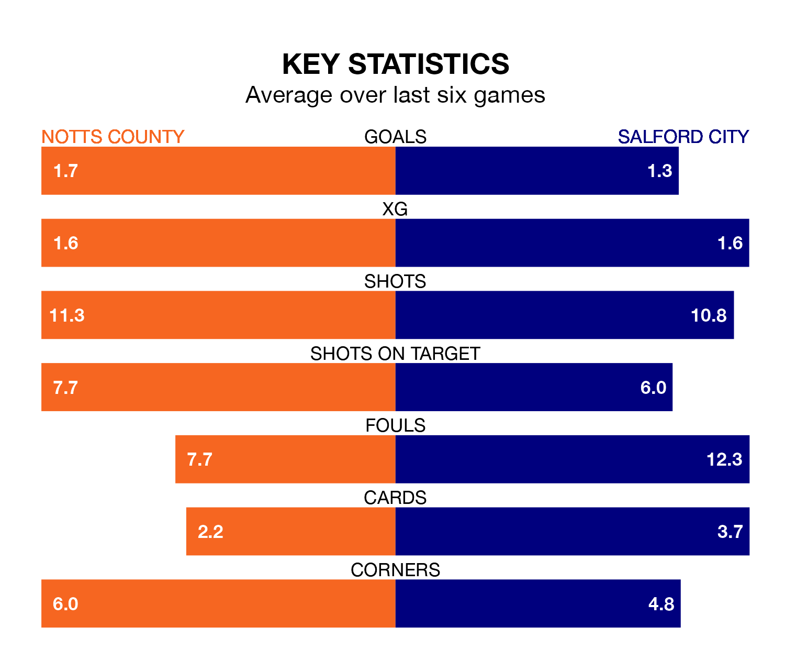

Notts County are on a poor run ahead of hosting Salford City at Meadow Lane on Saturday, with just four points collected from their last six games.
County have picked up one win and one draw in their last six EFL League Two games, and face an Ammies side whose last six games have brought one win and two draws.
With 75 goals in 38 games so far this season, County are the league's second-highest scorers with 2.0 goals per game. But they are conceding more than average too, letting in 72 goals at a rate of 1.9 per game.
Salford, meanwhile, are average scorers, with 1.5 goals per game. They have conceded 1.8 goals per game.
In Macaulay Langstaff, the hosts have the league's sharpest shooter so far this season. He has notched 24 goals in 38 appearances.
His goal rate of one every 139 minutes is slightly quicker than that of Matt Smith, City's top scorer with a goal every 137 minutes, and a total of 23 goals in 39 games.
The Ammies are 20th in the table after 39 games, of which they have won 11 and drawn 11, earning 44 points.
County are seven places ahead of the away side in 13th, with 15 wins and six draws putting them on 51 points.
County's last match was on Tuesday, a 3-0 win against Bradford City, with Alassana Jatta (two) and Langstaff getting the goals for County.
Salford beat Morecambe 3-1 last time out, on Sunday, with Callum Hendry, Connor McLennan and Curtis Tilt on the scoresheet.
Updated: 10:19 (UTC), 22/03/24